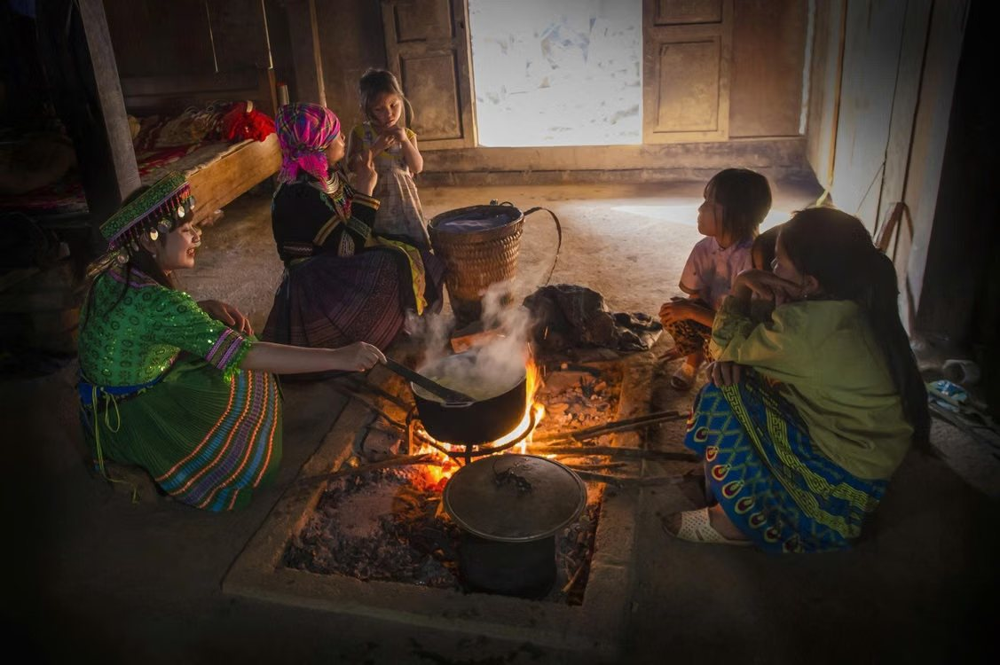

Bếp lửa trong mắt em
Chuyện văn hóa vùng cao bắt đầu từ căn bếp
Mùa đông tràn qua những mái sa mộc Quảng Nam, mang theo cái lạnh thấu xương bám chặt lấy những vệt sương muối trên nương. Giữa căn nhà sàn xám màu thời gian, bên bếp lửa đỏ hồng nơi hong khô đôi bàn tay nứt nẻ của trẻ em vùng cao và là nơi lưu giữ tiếng cười, câu chuyện bản làng đồng thời nhen nhóm những ước mơ tìm chữ dưới mái tranh nghèo.
Mùi khói nứa bám trên gấu áo chàm
Em quen với mùi khói bếp từ khi còn chưa biết đọc chữ.
Mỗi sáng, khi sương mù còn giăng ngoài ván thung lũng, mẹ đã thức dậy nhóm lửa. Tiếng củi nứa khô nổ lách tách "tách, đốm", rồi một làn khói màu xanh xám len qua kẽ lợp lá đào, bay lên tan vào không trung. Nồi sắn luộc hay vắt cơm độn ngô reo reo trên bếp, tỏa ra cái mùi thơm nồng ấm chữa lành cái lạnh buốt bàn chân.
Đêm xuống, căn nhà sàn lộng gió chìm vào bóng tối, chỉ còn vòng tròn ánh sáng đỏ rực của bếp lửa. Đôi dép xốp của em dựng bên bệt đất, mười ngón chân bấm đầy vệt bùn khô bắt đầu thấy ấm dần. Chúng em ngồi quanh gầm bếp, hơ lòng bàn tay vào ngọn khói quện mùi củi ướt, mắt hướng về phía ông bà để chờ nghe những câu chuyện cũ.

Ở bản em, bếp không chỉ để nấu ăn. Bếp là trái tim của căn nhà. Trên gác bếp phủ đầy bồ hóng đen nhánh là những xâu thịt lợn hong khói, bắp ngô giống cất dành cho mùa sau và cả những bọc nilon cẩn thận bọc lại vài cuốn sách cũ mà chúng em truyền tay nhau đọc.
Khi ngọn lửa kể chuyện bản làng và tục giữ lửa đầu năm
Người lớn trong bản dặn em: "Bếp lửa cũng có thần linh, không được tùy ý gạt than hay nghịch ngợm". Ngày bé em chưa hiểu, chỉ biết mỗi lần ngồi bên bếp, lòng lại thấy bình yên lạ kỳ.
Ở vùng núi Nam Trà My hay các bản làng người Cơ Tu, ngọn lửa gắn liền với tín ngưỡng Thần Lửa - vị thần giữ sự sống và ấm no. Em nhớ những ngày cuối năm, khi cái lạnh cắt da cắt thịt tràn về, người dân làng Aur lại gom góp từng củ sắn, con cá khô mang đến bếp nhà chung. Khách phương xa ghé bản, dù chưa hề quen biết, cũng được mời ngồi ngay bên bếp lửa, chuyền tay nhau chén nước chè dây nóng hổi. Văn hóa hiếu khách của người vùng cao chẳng nằm ở đâu xa xôi, nó nằm ngay trong cách người ta chia nhau chút hơi ấm bên bếp lửa.

Rời Nam Trà My sang vùng trung du Tiên Phước, tục giữ lửa đầu năm lại mang một nhịp thở khác. Sáng mùng Một Tết, người Xê Đăng rước ngọn lửa mới từ nhà rông về bếp nhà. Ngọn lửa hồng đỏ đượm chảy suốt những ngày Tết như lời cầu mong cho mùa màng bội thu, cho lũ trẻ trong bản khỏe mạnh, không bị cái ho, cái sốt làm phiền.
Em học được cách nhận biết từng loại củi: củi dẻ cho lửa đượm, củi nứa cháy nhanh, củi dâu rừng giữ than qua đêm. Nhưng điều quý giá nhất em học được bên bếp lửa, là biết trân trọng những nét đẹp bình dị mà thế hệ trước đã lặng lẽ giữ gìn.
Từ bậu cửa bếp lửa đến trang sách mở giữa mây ngàn
Căn bếp có khói, có ký ức, dưới ánh lửa bập bùng những đêm đông, bậu cửa bếp là nơi em lật mở từng trang sách.
Ánh lửa đỏ hắt lên từng dòng chữ Tiếng Việt. Ngón tay nứt nẻ của em di chuyển chậm rãi qua những trang sách đã sờn mép. Ngoài kia, gió núi vẫn hú qua kẽ ván, nhưng bên bếp ấm, thế giới trong trang sách lại mở ra bao điều kỳ diệu: có biển rộng bao la, có những cây cầu xi măng vững chãi không bao giờ bị lũ cuốn, có những ngôi trường khang trang rợp bóng cây.
Bếp lửa giữ ấm đôi bàn tay, nhưng tri thức từ những trang sách mới là thứ giữ ấm ước mơ của trẻ em vùng cao. Cuộc sống nơi đây đang thay đổi từng ngày, nhiều bếp lửa dần vắng bóng khói chiều, nhưng khát khao được học, được biết về thế giới bên ngoài dãy núi của chúng em thì chưa bao giờ nguội tắt.
◆ ◆ ◆
Cùng chuyên mục
Xem thêm » Món ăn mùa đông của em: Mèn mén, thắng cố, bắp ngô nướng ấm lòng giữa sương núi
Món ăn mùa đông của em: Mèn mén, thắng cố, bắp ngô nướng ấm lòng giữa sương núi Tiếng khèn đêm đông: Ngôn ngữ không lời của núi rừng sưởi ấm tuổi thơ vùng cao
Tiếng khèn đêm đông: Ngôn ngữ không lời của núi rừng sưởi ấm tuổi thơ vùng cao Mùa đông - Mùa bà dạy em thêu hoa trên vải: Nhịp chỉ gieo ước mơ nơi lưng chừng mây
Mùa đông - Mùa bà dạy em thêu hoa trên vải: Nhịp chỉ gieo ước mơ nơi lưng chừng mây Mùi trà Shan Tuyết và chè dây: Nhấp ngụm thanh khiết giữa sương giăng sưởi ấm mùa đông vùng cao
Mùi trà Shan Tuyết và chè dây: Nhấp ngụm thanh khiết giữa sương giăng sưởi ấm mùa đông vùng cao Hành trình của chiếc áo nỉ chuyền tay qua 4 anh em: Vệt màu đỏ sưởi ấm mùa đông vùng cao
Hành trình của chiếc áo nỉ chuyền tay qua 4 anh em: Vệt màu đỏ sưởi ấm mùa đông vùng cao